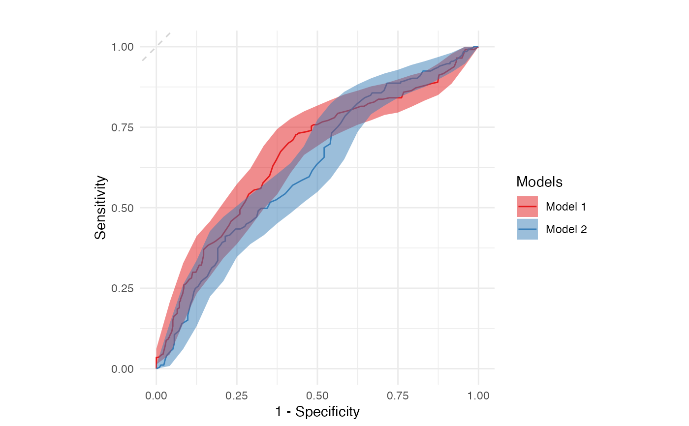

R/roc_plots.R
roc_plot_multi.RdGenerate an ROC curve plot with error bars showing 95 percent confidence intervals
roc_plot_multi(df, outcome, prediction, model, ci = FALSE, plot_title = "")The df as a data.frame.
A character string containing the name of the column containing the outcomes (expressed as 0/1s).
A character string containing the name of the column containing the predictions.
A character string containing the name of the column containing the model label.
Show confidence interval ribbon. Defaults to FALSE.
A character string containing the title for the resulting plot.
A ggplot containing the ROC plot
data(multi_model_dataset)
roc_plot_multi(multi_model_dataset, outcome = 'outcomes', prediction = 'predictions', model = 'model_name', ci = TRUE)
#> Setting levels: control = 0, case = 1
#> Setting direction: controls < cases
#> Setting levels: control = 0, case = 1
#> Setting direction: controls < cases
#> You may need to call library(ggplot2) if you want to add layers, etc.
#> Loading required namespace: ggplot2
#> Scale for x is already present.
#> Adding another scale for x, which will replace the existing scale.
